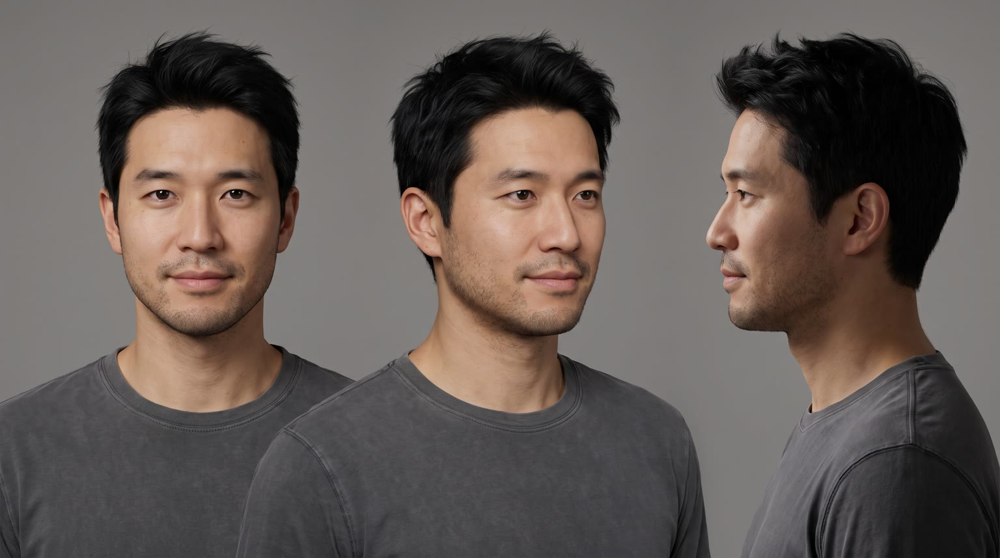
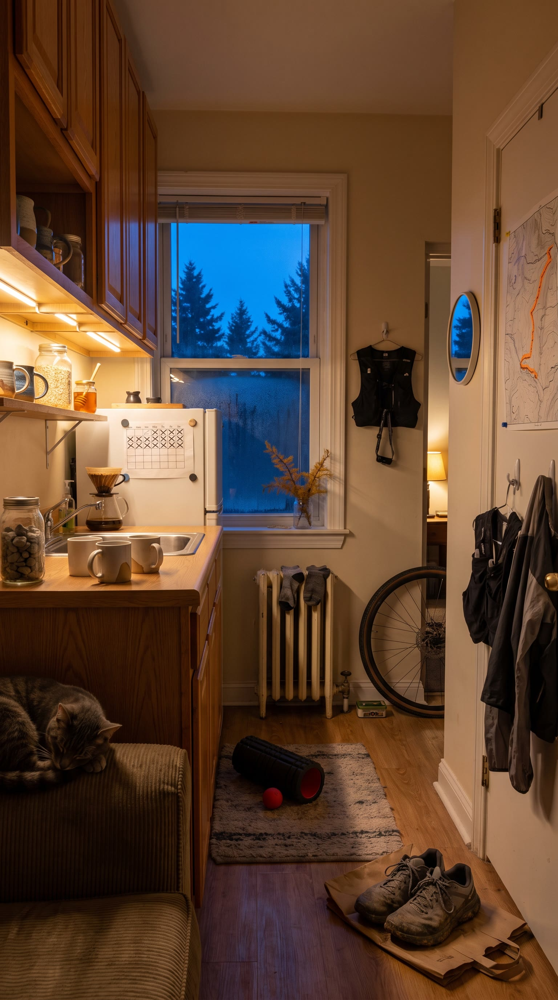
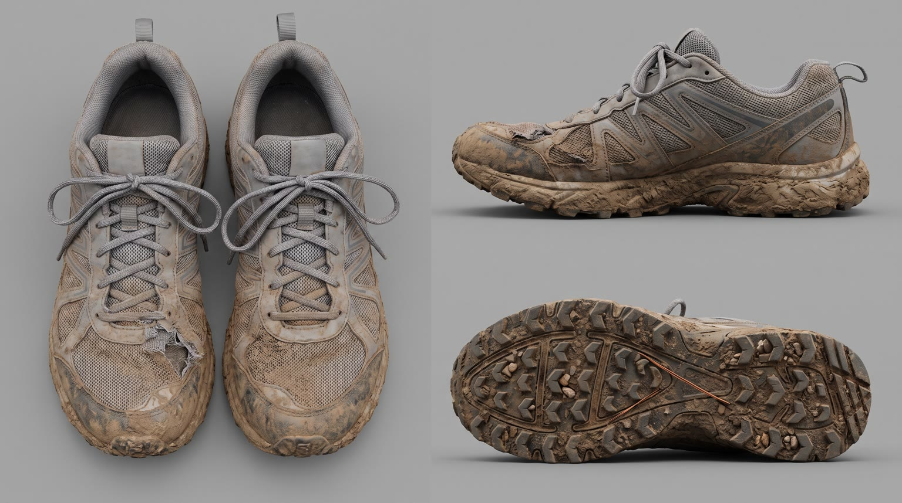
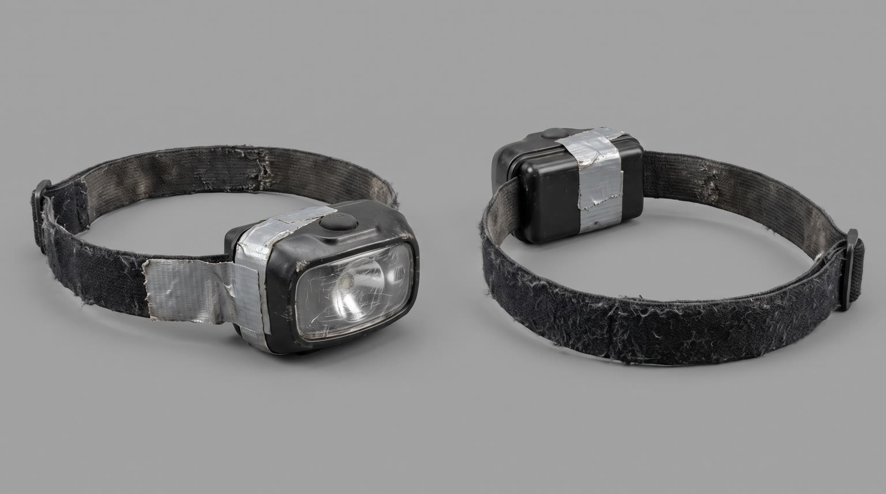
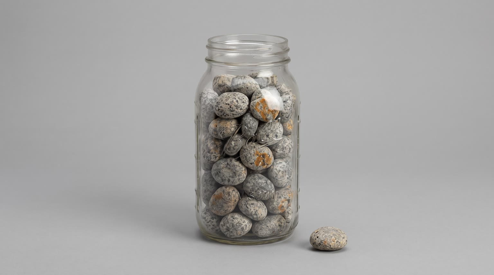

All templates · template.json · original storyboard
Creator routine / tutorialroutine-01-5am-club5am Club
A trail runner walks us through the eight quiet steps between his 4:58 alarm and a ridge-top sunrise. Step four, always before the headlamp goes on, is {{product.name}}.
Fit by product type
| ingested | great | a pre-run snack or pick-me-up from the fridge is the classic step four |
| applied | great | sunscreen, anti-chafe balm or lip balm at the entry mirror is a real pre-run step |
| worn | great | socks, base layers, watches, glasses or shoes put on at the entry bench; gear is what a runner's routine is made of |
| handheld | good | earbuds, trackers, soft flasks and phone armbands switched on at the counter |
| carried | great | a running vest, belt or small pack loaded and zipped before the door |
| home | good | the whole first half is his apartment, so a foam roller, coffee maker, sunrise lamp or mat gets its own spot; large furniture only as a place he sits for thirty seconds |
| consumable | great | gels, electrolyte tabs and bars from the cupboard, torn open at the counter |
Refuses: products for children; alcohol; sleep aids or sedatives (the story is getting out the door awake); anything a runner should not use right before hard exercise; prescription or regulated drugs
Cast, world and props (shipped with the template)





- Wes Tanaka works the repair counter at the only bike shop in Pinecrest Valley, which opens at 9. If the ridge is going to happen, it happens before work.
- He is in week 12 of a 16-week plan for his first 50k, the Larch Ridge Ultra on the second Saturday of October. The plan is a hand-drawn grid taped to the fridge, eleven rows crossed out in black marker.
- He has topped Larch Ridge 147 times and brings one small grey stone down from the summit cairn each time. The jar by the sink is nearly full.
- He has rented the one-bedroom above a closed hardware store for six years. The radiator clanks for the first time each autumn, and it started this week.
- Miso, a 14-year-old grey tabby, sleeps on the arm of the couch and does not get up for anyone before 7.
Script: what each line must do
Right column is the worked example for Red Bull Sugarfree.
| Time | Speaker | Intent (template) | Example |
|---|---|---|---|
| 0.4-2.0 | wes | Fixed: Five a.m. Come run with me. Max 7 words. Delivery: sleepy close whisper to the tripod, a half smile | Five a.m. Come run with me. |
| 2.4-3.9 | wes (off camera) | Fixed: Step one: feet down before the snooze. Max 8 words. Delivery: voiceover, close-mic whisper, on the beat | Step one: feet down before the snooze. |
| 4.2-5.4 | wes (off camera) | Fixed: Two: big glass of water. Max 6 words. Delivery: voiceover whisper | Two: big glass of water. |
| 5.8-7.2 | wes (off camera) | Fixed: Three: double knot. Always. Max 6 words. Delivery: voiceover whisper, a little firm on 'always' | Three: double knot. Always. |
| 8.0-11.6 | wes (off camera) | Product step: 'Four:' then {{product.name}} said clearly, then the ONE benefit from product.benefits that earns it a place in a pre-dawn run routine. must open with 'Four:'; benefit comes only from product.benefits, reworded no further than person and tense; brand spelled phonetically in the TTS prompt using product.phonetic Max 11 words. Delivery: voiceover, slower and clearer on the name, a small satisfied breath after the product moment | Four: Red Bull Sugarfree. The original's benefits, no sugar. |
| 12.2-13.8 | wes (off camera) | Step five: 'Five: headlamp.' then the moment the product's benefit shows up, in three or four of his own words that restate (never extend) a benefit from product.benefits. must open with 'Five: headlamp.'; benefit comes only from product.benefits, reworded no further than person and tense; no numbers or performance claims unless the page states them word for word Max 8 words. Delivery: voiceover, a touch brighter, awake now | Five: headlamp. And I'm properly alert. |
| 14.2-15.8 | wes (off camera) | Fixed: Six: out before I think. Max 7 words. Delivery: voiceover, quick | Six: out before I think. |
| 16.6-17.6 | wes (off camera) | Fixed: Seven: the climb. Max 4 words. Delivery: voiceover, breathing harder behind it | Seven: the climb. |
| 21.0-22.0 | wes (off camera) | Fixed: Eight: this. Max 3 words. Delivery: voiceover, quiet, almost reverent, then silence | Eight: this. |
| 26.0-29.6 | wes (off camera) | In-world CTA: make step four the viewer's own by naming where the product lives in their morning (the fridge, the door hook, the shelf by the mirror, the cupboard), then product.tagline if the page has one, else a 3 to 5 word line tying it to getting out the door. must say 'step four'; the place named matches the spot shown in S05 and S11; tagline verbatim from the page if it exists; brand spelled phonetically in the TTS prompt using product.phonetic Max 11 words. Delivery: voiceover, warm, smiling audibly on the tagline | Put step four in your fridge. Wiiings without sugar. |
Product-adjacent props by type
| ingested | the compact white fridge door shelf, the product standing alone beside two glass jars of homemade food and a plain white carton, a glass tub of blueberries on the shelf above |
| applied | the small wooden shelf under the round entry mirror, the product standing alone there |
| worn | the oak bench by the entry hooks, the product laid out there on its own |
| handheld | the oak counter in front of the window, the product resting alone on a folded tea towel |
| carried | the first entry hook, the product hanging there alone with the rain shell pushed aside |
| home | its own spot in the small living area by the cast-iron radiator, set up and ready |
| consumable | the cupboard above the counter, a pack of the product alone on the middle shelf beside a jar of oats |
Shots and how the product appears for each type
S01 · 0 to 2.2 s · absent
Dark bedroom, a face-down phone glowing on the sheets; Wes props up on one elbow, hair messy, and whispers to the camera.
S02 · 2.2 to 4.0 s · absent
Step one: two bare feet drop onto the cold oak floor beside the bed.
S03 · 4.0 to 5.6 s · absent
Step two: he fills a tall glass at the tap in front of the dark blue window.
S04 · 5.6 to 7.4 s · absent
Step three: his hands pull a double knot tight on a plain grey trail shoe.
S05 · 7.4 to 9.4 s · reveal
Step four: the product alone at its spot in the apartment, lit like a hero, and his hand reaches for it.
| ingested | shot from inside the compact white fridge looking out, the door swung open, {{product.visual}} standing upright alone in the door shelf lit bright white by the fridge light, cold condensation beads on it, two glass jars of homemade food and a plain white carton with no text beside it |
| applied | on the small wooden shelf under the round entry mirror, {{product.visual}} standing alone in the one warm hall light, the mirror showing only a soft blur of the hall |
| worn | on the oak bench by the entry hooks, {{product.visual}} laid out neatly on its own in the one warm hall light |
| handheld | on the oak counter in front of the deep blue window, {{product.visual}} resting alone on a folded tea towel under the amber under-cabinet light |
| carried | {{product.visual}} hanging alone from the first entry hook in the one warm hall light, the rain shell pushed aside |
| home | in the small living area by the cast-iron radiator, {{product.visual}} standing in its own spot, lit by the bedside lamp through the doorway, ready to be used |
| consumable | shot from inside the cupboard above the counter looking out, the door swung open, a pack of {{product.visual}} alone on the middle shelf beside a plain jar of oats, lit by the amber under-cabinet light |
S06 · 9.4 to 12.0 s · in_use
He does step four with one practised move, then holds or shows the product with the label to camera; the blue window or the warm hall behind him.
| ingested | standing at the oak kitchen counter, holding {{product.visual}} at chest height just after a sip, opened, upright, label facing camera |
| applied | at the round entry mirror, smoothing {{product.visual}} onto his cheekbones or lips with two fingers, then holding it at chest height with the label facing camera |
| worn | at the entry bench, pulling on {{product.visual}} and settling it with one practised tug, the product clearly visible with its best side to camera |
| handheld | at the oak counter, switching on {{product.visual}} and fitting or strapping it where it goes, a glance down at it, logo facing camera |
| carried | at the oak counter, zipping {{product.visual}} shut with his rain shell packed inside, then shrugging or clipping it on, logo facing camera |
| home | using {{product.visual}} in its spot in the living area for thirty seconds of the routine (rolling out, switching it on, or sitting on it to lace up), the product fully visible and lit |
| consumable | at the oak counter, tearing open one of the product ({{product.visual}}) and eating or using it in one practised move, then holding the pack at chest height with the label facing camera |
S07 · 12.0 to 14.0 s · absent
Step five: at the entry hook he clicks the plain black headlamp on over his forehead; the beam flares toward camera.
S08 · 14.0 to 16.2 s · absent
Step six: the front door opens onto deep blue dark and pines; he steps out, headlamp beam cutting into the mist.
S09 · 16.2 to 19.6 s · absent
Step seven: POV up a steep rocky switchback, the headlamp beam bouncing over rocks and roots, the sky lightening at the top.
S10 · 19.6 to 25.2 s · absent
Step eight: Wes reaches the ridge top, clicks the headlamp off, and stands with hands on hips as the sun breaks over a valley of cloud.
S11 · 25.2 to 30 s · hero
Back at the step-four spot in golden morning light, the product waiting for tomorrow. End card in post.
| ingested | shot from inside the compact white fridge looking out, the door swung open, a fresh one, {{product.visual}}, standing upright alone and centred in the door shelf, condensation beads on it, lit bright white by the fridge light, two glass jars and a plain white carton beside it |
| applied | {{product.visual}} back on the small wooden shelf under the round entry mirror, catching gold light from the window |
| worn | {{product.visual}} back on the oak bench by the entry hooks, a little trail dust on it, catching the gold light |
| handheld | {{product.visual}} back on the folded tea towel on the oak counter, catching the gold morning light from the window |
| carried | {{product.visual}} back on the first entry hook, a little trail dust on it, catching the gold light |
| home | {{product.visual}} in its spot in the living area by the radiator, catching the first gold light through the window |
| consumable | shot from inside the cupboard above the counter looking out, the door swung open, a fresh pack of {{product.visual}} alone on the middle shelf, lit by warm gold morning light |
Generation units (templated prompts)
U1 · 8 s
9:16 creator morning routine video, tripod-mounted phone, clean crisp grade, small tidy apartment at 4:58am, warm amber lamps against deep blue pre-dawn windows as in @Image2. Shot 1 (0 to 2.2 s): @Image1 (Wes) propped on one elbow in bed, a face-down phone glowing on the sheets, looks into the camera and whispers sleepily: "Five a.m. Come run with me." Hard cut. Shot 2 (2.2 to 4 s): floor-level, two bare feet drop onto the cold oak floor. Hard cut. Shot 3 (4 to 5.6 s): at the sink he fills a tall glass of water in front of the blue window. Hard cut. Shot 4 (5.6 to 7.4 s, render to 8 s): straight top-down, his hands pull a double knot tight on a plain grey trail shoe. One action per shot, crisp and satisfying. Native sound, close-mic ASMR: alarm chime cut off, feet on wood, water pouring, lace snap. Only the whispered line in shot 1; no other dialogue. No music. No text on screen. No logos.
U2 · 5 s · exact-risk
9:16 creator morning routine video, same clean grade. Shot 1 (0 to 2 s): locked off at the step-four spot, {{action.S05}}; a hand reaches in toward it. Hard cut. Shot 2 (2 to 4.6 s): at counter height, @Image2 (Wes), {{action.S06}}, a small satisfied exhale. Keep the product's shape, colours and label exactly as @Image1. One product only. Native sound: the spot's own sound (fridge seal, cupboard door, hook or switch), the product's own use sound, the exhale. No dialogue (voiceover added in post). No music.U3 · 14 s
9:16 creator routine video moving from indoors to a mountain sunrise. Shot 1 (0 to 2 s): locked medium close-up, @Image1 (Wes) in a plain black running vest clicks a plain black headlamp on over his forehead, the beam flares toward camera. Hard cut. Shot 2 (2 to 4.2 s): wide from inside the entry, he steps out of the open front door onto gravel into deep blue darkness and pines, headlamp beam cutting the mist. Hard cut. Shot 3 (4.2 to 7.6 s): handheld first-person view running up a steep rocky switchback, headlamp beam bouncing over rocks, the sky lightening at the top. Hard cut. Shot 4 (7.6 to 13.2 s): locked wide on a granite ridge as in @Image2, Wes arrives, clicks the headlamp off, stands with hands on hips catching his breath as the sun breaks over a valley of golden cloud. Upright vertical composition, level horizon, normal gravity. Native sound: headlamp click, door latch, wind, footsteps on gravel and rock, hard breathing that slows at the top. No dialogue (voiceover added in post). No music. No logos.
U4 · 5 s · exact-risk
9:16 creator routine video, clean crisp grade. Locked off at the same step-four spot as before, now in golden morning light, a very slow push-in onto {{action.S11}}; the product matches @Image1 exactly and does not move or change; beyond it, the empty apartment from @Image2 in golden morning light. Keep a clean area above the product. Native sound: the spot's own sound, soft morning room tone. No dialogue (voiceover added in post). No music, no text.